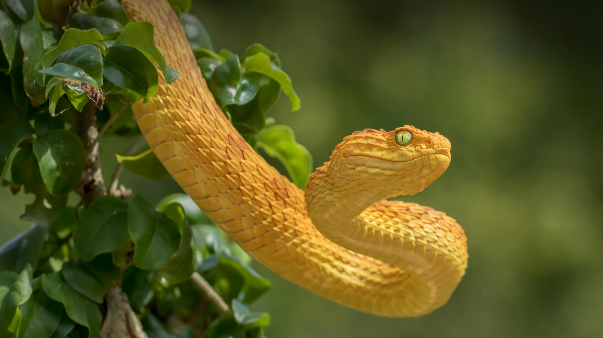
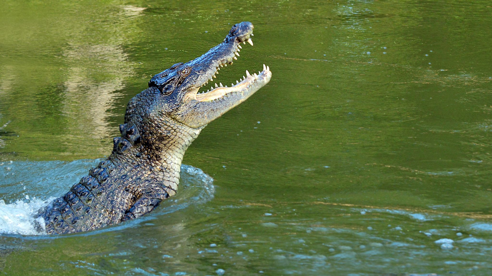
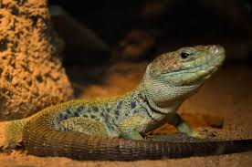
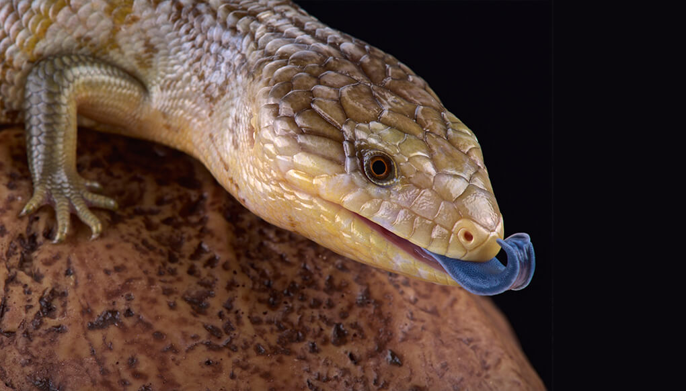
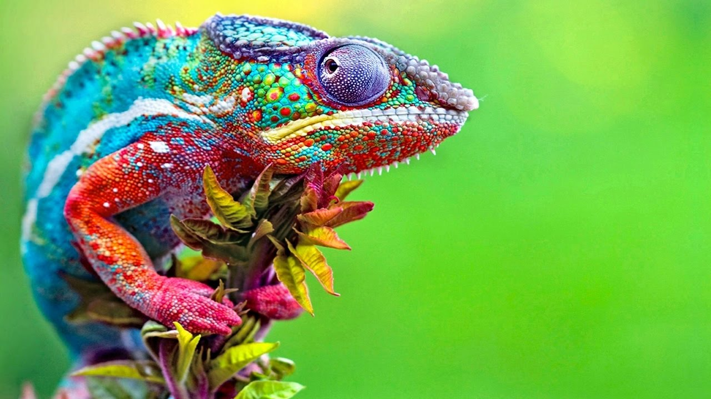

Turtles have a hard shell that protects them like a shield, this upper shell is called a carapace. Turtles also have a lower shell called a plastron. Many turtles can hide their heads inside their shells when attacked by predators.

Snakes are carnivores. Snakes don't have eyelids. Snakes can't bite food so have to swallow it whole. Snakes have flexible jaws which allow them to eat prey bigger than their head!

The physical characteristics of crocodiles, such as their sharp teeth make them good predators. Crocodiles are fast over short distances. Crocodiles have the strongest bite of any animal in the world. The general lifespan of a crocodile is 70 years.

Some lizards can detach their tails if caught by predators. They have walked the Earth for some 200 million years. There are approximately over 5,000 lizard species

Blue-tongued skinks spend the majority of their day searching the ground for food and basking in the sun.
When threatened, the blue-tongued skink puffs up its body, sticks out its long, blue tongue, and hisses.
Blue-tongues do not have well-developed teeth, but are capable of a powerful bite.

They mainly change colour in order to comunicate or regulate body temprature. Unlike many lizards, chameleons can't regrow their tails. Almsot half the know species of chameleon live in Madagascar.